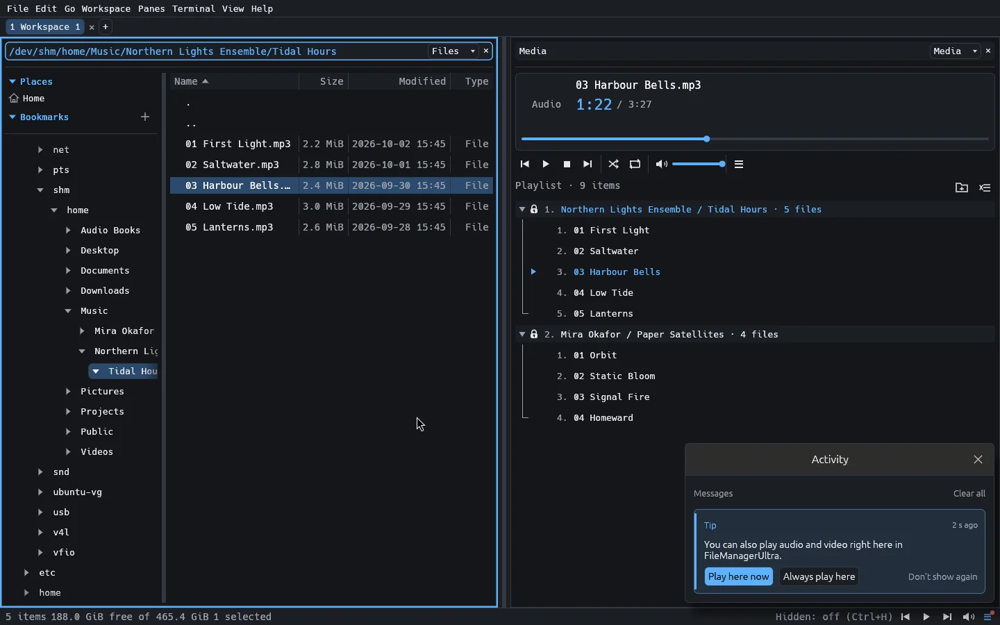
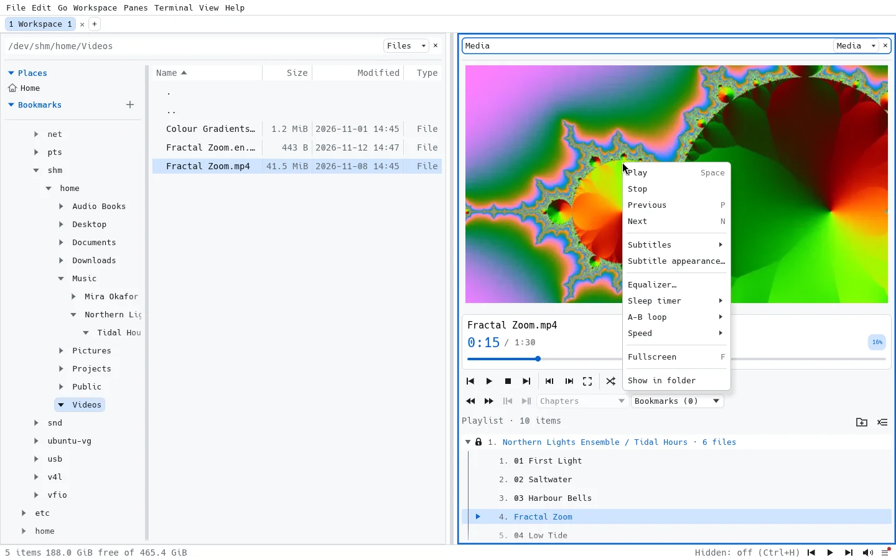
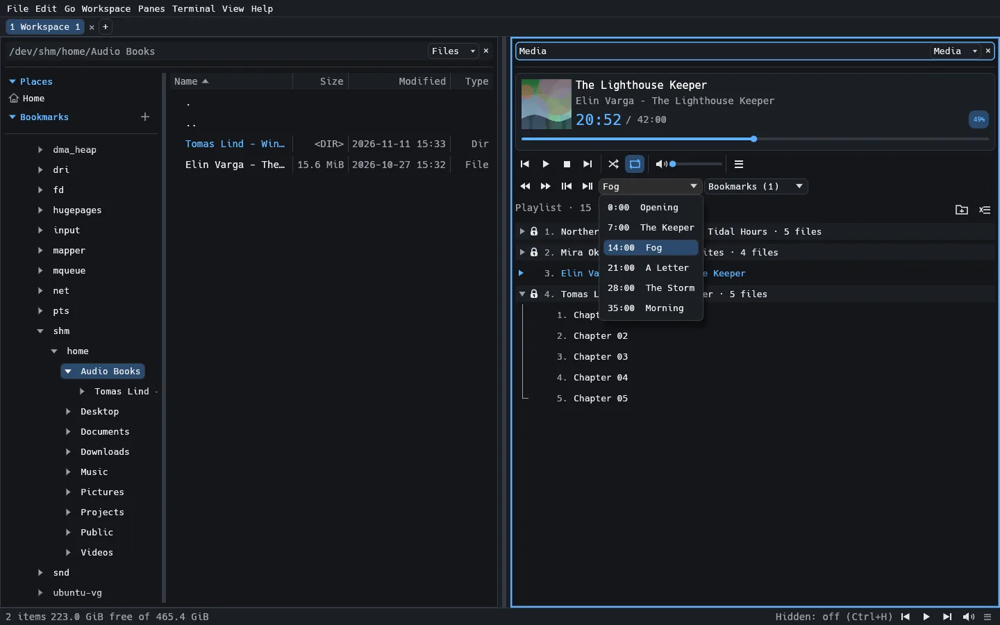
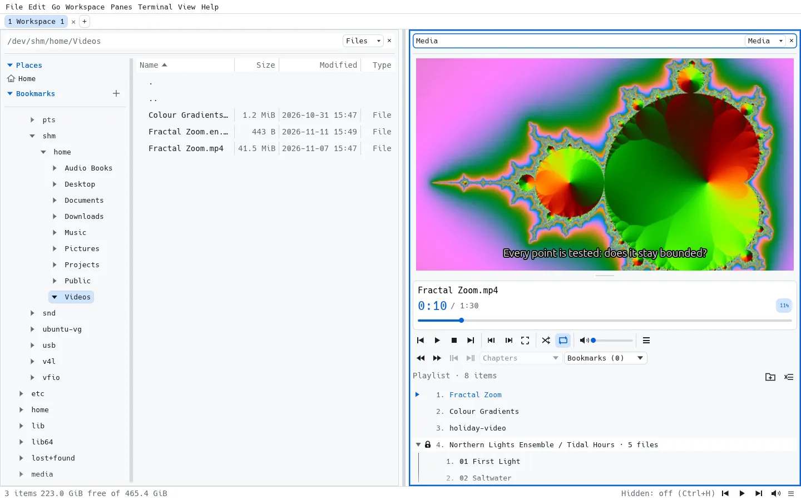
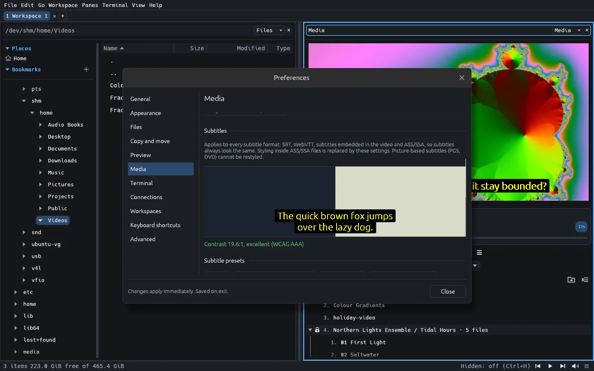
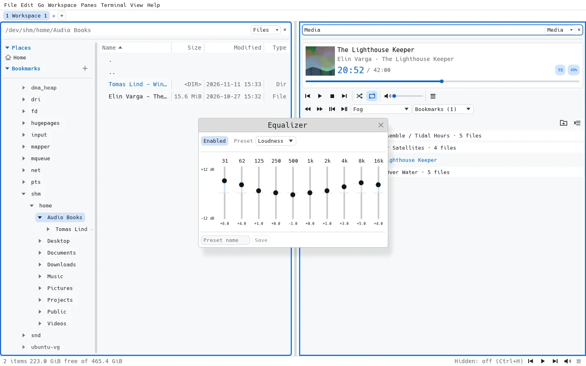

Git diff in the Preview pane
Modified files open as a side-by-side diff against HEAD or any branch or tag, with word highlights and F7 / Shift+F7 to jump between changes.
Status letters and tinted names show what changed in the listing and the tree.
Screenshots come straight from the app. Most match the page theme, and a few show the other one, so you see both. The Auto / Light / Dark switch at the top changes the page and its screenshots; click any screenshot to enlarge it.
Modified files, documents, images and logs open in a Preview pane next to the listing, and a terminal is one split away.
Modified files open as a side-by-side diff against HEAD or any branch or tag, with word highlights and F7 / Shift+F7 to jump between changes.
Status letters and tinted names show what changed in the listing and the tree.

Nested lists, task lists, aligned tables and code blocks with per-block copy buttons. Zoom a preview from 50% to 400% and search with Ctrl+F.
Images next to the document show inline, and the common HTML in READMEs (centered headings, sized images, <picture> for dark and light) renders too. Remote images load only when you allow them.

Preview an image next to the listing, or switch the preview to a thumbnail grid of the whole folder.
Right-click an image and choose Copy Image to paste the full-size original into a browser or editor.

Severity filters, search and UTC time ranges from five minutes to seven days, or custom dates and times.

Put a terminal beside your files. Hold Shift for local selection and scrolling when an application captures the mouse.

A music, audiobook and video player that is just another pane. New in 0.2.0; media keys and audio speed arrived in 0.2.1.
Drop files or whole folders on the player to play them right away, or on the playlist to add them exactly where the line shows. Play, Play next and Add to queue work from Files and Preview too. Each added folder becomes a playlist folder you can collapse, lock, rename and reorder by drag and drop.
Gapless playback between tracks, shuffle and repeat, and playback that carries on in the background with Previous, Play/Pause, Next and volume in the status bar. Import M3U, M3U8 and PLS playlists or save the queue as M3U8. Files on SFTP and SMB play too.
Your keyboard's media keys work while you use other apps, and the system's media controls show the title, artist, album and cover art: the GNOME or KDE media widget, the Windows media overlay and macOS Now Playing.

Double-clicking a song or video opens it in your default app, as always. The first time, a short tip in the Activity panel shows that it can play right here instead: Play here now for this file, Always play here to make it the default.
Change your mind any time in Preferences ▸ Media ▸ Opening files, separately for audio and video. The tip shows only once and never interrupts you.

Right-click the video, the cover art or the now-playing area for play and pause, tracks, subtitles and their appearance, the equalizer, sleep timer, A-B loop, speed, fullscreen and Show in folder.
Entries only appear when they apply: an audio track gets no subtitle or fullscreen entries.

.m4b files, files tagged Audiobook and folders you mark get Back and Forward skip buttons (15 s / 30 s, adjustable), previous and next chapter, a chapter list and bookmarks.
The seek bar and progress percentage span the whole book, even across many files. Playing a book again continues where you stopped, and finished books get a check mark.
Listen faster or slower, from 0.5× to 3×, with the voice at its normal pitch and no ffmpeg needed. Each book remembers its own speed.

Video with sound, fullscreen (F), frame-by-frame stepping while paused, 0.5× to 3× speed with the pitch kept, and a choice of audio track. Each video in a folder, such as a series of episodes, resumes where you stopped it. YouTube-style keys work throughout: Space or K, J and L, arrows, 0–9.
Subtitle files next to the video, such as movie.en.srt, are found automatically. Embedded tracks, SRT, WebVTT and ASS/SSA work as well; G and H shift the timing in 0.1 s steps. DVD images (.iso), .VOB and Blu-ray or camcorder .m2ts files play directly.

Preferences ▸ Media sets the size, position, font, colours, a background box, outline or shadow, and spacing, the same for every subtitle format.
Presets such as High contrast and Yellow on black are one click away, and a live preview shows the contrast ratio with a warning when text would be hard to read. Picture-based subtitles (Blu-ray, DVD) are not shown yet.

Built-in and saved presets, with an automatic preamp to avoid clipping. The equalizer stays open in its own window while you try presets.
Also in the Options menu: an A-B loop to repeat part of a track, and a sleep timer that fades out before pausing.

Video, chapters and poster frames use ffmpeg, and so do audio formats the built-in decoder can't read (such as WMA, Opus and APE). On Windows, Preferences ▸ Media can download a pinned, checksum-verified ffmpeg for you; on Linux and macOS, install it with your package manager. See Install.
A terminal is just another pane. Run a terminal coding agent such as opencode in one pane, keep your project in a Files pane, and review what changed in a Preview pane.
The terminal pane runs any command-line tool, including full-screen TUIs, with application mouse support and up to 1,000,000 rows of scrollback.
Git status markers in the listing show which files were touched, and the Preview pane opens a side-by-side diff against HEAD, so you can read every change before you commit it.
Split as many panes as you need: a second agent, a test runner, or a log tail.

Point any pane at sftp://user@host/… or smb://server/share. Remote folders behave like local ones: split, drag & drop, copy and move as background jobs.


Light or dark, with an accent colour of your choice: pick one of the presets in Preferences ▸ Appearance, or enter a custom #rrggbb value. Default restores the theme colour.